LOI
Loss on Ignition is a number that appears on the data sheets of ceramic materials. It refers to the amount of weight the material loses as it decomposes to release water vapor and various gases during firing.
Key phrases linking here: gas-generating, gassers, loi - Learn more
Details
Simplistically, LOI is the percentage of weight a ceramic material loses on firing. Thus, glaze materials have an LOI, but the fired glaze does not. Assuming firing to a typical stoneware temperature of 1200C, the amount of weight loss can be surprising. Kaolins, for example, lose around 12% (mainly crystal-bound water). Ball clays lose about half of that (a combination of crystal water, organic carbon and sulphur). Many raw stoneware, earthenware and fireclays can have high sulphur content (high enough to create a strong odor during firing). Carbonates decompose and gas off CO2. Dolomite and calcium carbonate lose over 40% of their weight and copper carbonate is not far behind. Barium carbonate loses 20%+ and lithium carbonate a whopping 60%. Gerstley Borate and Colemanite are other high-weight losers (20%+). Even feldspars lose some weight (usually less than 1%). LOI can also be other things (e.g. chlorine, oxygen, fluorine; the latter might break down quickly in one use but linger in a melting glaze or frit).
Each of these materials has its own thermal history, losing weight at one or more temperatures as it decomposes with increasing heat (some materials can actually gain weight at certain temperatures; non-oxide materials, for example, capture oxygen from the atmosphere or other materials). LOI is a big problem in the firing of many types of ware, and must be minimized. Some of these materials can be calcined for some uses (e.g. some of the kaolin in glazes). Others cannot be calcined because their raw properties are needed (e.g. plasticity of clay) or they become unstable (e.g. carbonates). The oxides of others (needed for glazes) can be sourced from frits (e.g. boron). Lower carbon ball clays can be used in bodies. Stains can be employed instead of metallic carbonate colors. Calcia and magnesia for glazes can be sourced from wollastonite and frits instead of calcium carbonate or dolomite.
Notwithstanding all of this, the mechanisms that produce gases in many of these materials happen at fairly low temperatures and defect-free fired product can actually be done using bodies and glazes having significant LOIs. How? Those who fire kilns concern themselves with the temperatures at which weight loss events occur in the bodies and glazes. Engineers can use instruments (e.g. DTA devices) to create a weight-loss profile of the entire firing range of a body that contains multiple materials having an LOI. Or a simple study of the materials used can produce the same information (although less precise). In periodic kilns, the firing curve can be flattened in the zones of high gas generation. Potters have often learned by experience when and where to fire faster or slower.
In many industries where tunnel kilns are used the firing curve is much less flexible. And firing must be done quickly (fast-fire is less than three hours cold-to-cold). Weight loss profile information would likely be used to choose a bisque fire curve and temperature tuned to burn away all volatiles (thus preventing all body gas-related defects in the glaze). But in other industries (like tile, brick) ware must be single-fired in tunnel kilns. Obviously, technicians have a challenge to produce quality ware, so knowledge of LOI information is doubly important.
Technicians doing chemistry have an entirely different perspective of LOI. In glaze chemistry, we think of LOI as being like the shells thrown away from a bag of nuts (if you need 1 kilo of peanuts that might mean needing to buy 2 kilos of shelled nuts). It is likewise with glaze materials. For example, 100 grams of generic kaolin going into a kiln sources only 87.5 grams of Al2O3 and SiO2 for glass-making. To get 100 grams of SiO2 and Al2O3 we would need 100/0.875 (or 114.3) grams of the raw kaolin powder. Digitalfire Desktop Insight used to store materials in its MDT (materials database) as formulas. So generic kaolin, for example, had to compensate by recording a formula weight of 253.9 instead of 222.2 (Insight was able to calculate the 12.5% LOI from that difference). Insight-live.com now stores material chemistries as analyses, the LOI is specified as a percentage along with the other oxides.
When the LOI for each material in a recipe is known, it is easy to calculate the LOI of the raw recipe as a whole. Insight-live does that automatically when it displays the chemistry of recipes. Because of this, it is possible to use simple procedures (within an Insight-live account) to substitute materials having lower or zero LOIs into glaze recipes without changing the chemistry (different materials source the same mix of oxides). Huge increases in glaze quality can be realized, for example, by sourcing oxides like Li2O, BaO, B2O3 from frits instead of the high-LOI raw materials that supply them.
If you have an analysis lacking an LOI figure, or suspect the accuracy of the analysis delivered by a lab, then you can weigh, fire, and weigh again to derive the actual LOI and compensate the analysis. Following is the mathematical method of applying a 5% measured LOI to an existing analysis that had no specified LOI.
LOI-Adjusting an Analysis 100 - 95 = 5 / 100 = 0.95 -------------------------- K2O 7.3% x 0.95 = 6.9% CaO 9.4% x 0.95 = 8.9% MgO 1.0% x 0.95 = 1.0% ZnO 1.0% x 0.95 = 1.0% Al2O3 11.8% x 0.95 = 11.2% SiO2 69.5% x 0.95 = 66.0% LOI 5.0% -------------------------- 100.0% 100.0%
If the original already had specified a 2% LOI, for example, then the formula to calculate the multiplier would be:
98 - 95 = 3 / 100 = 0.97
Related Information
LOI horse race with surprising winners

This picture has its own page with more detail, click here to see it.
This chart compares the decompositional off-gassing (% weight Loss on Ignition) behavior of six glaze materials as they are heated through the range 500-1700F. It is amazing how much weight some can lose on firing - for example, 100 grams of calcium carbonate generates 45 grams of CO2! This chart is a reminder that some late gassers overlap early melters. That is a problem. The LOI of these materials can affect glazes (causing bubbles, blisters, pinholes, crawling). Talc is an example: It is not finished gassing until 1650F, yet many fritted glazes have already begun melting by then. Even Gerstley Borate, a raw material, begins to melt while talc is barely finished gassing. Dolomite and calcium carbonate Other materials also create gases as they decompose during glaze melting (e.g. clays, carbonates, dioxides).
The LOI of Gerstley Borate is a big deal
Here is how much it can affect a glaze
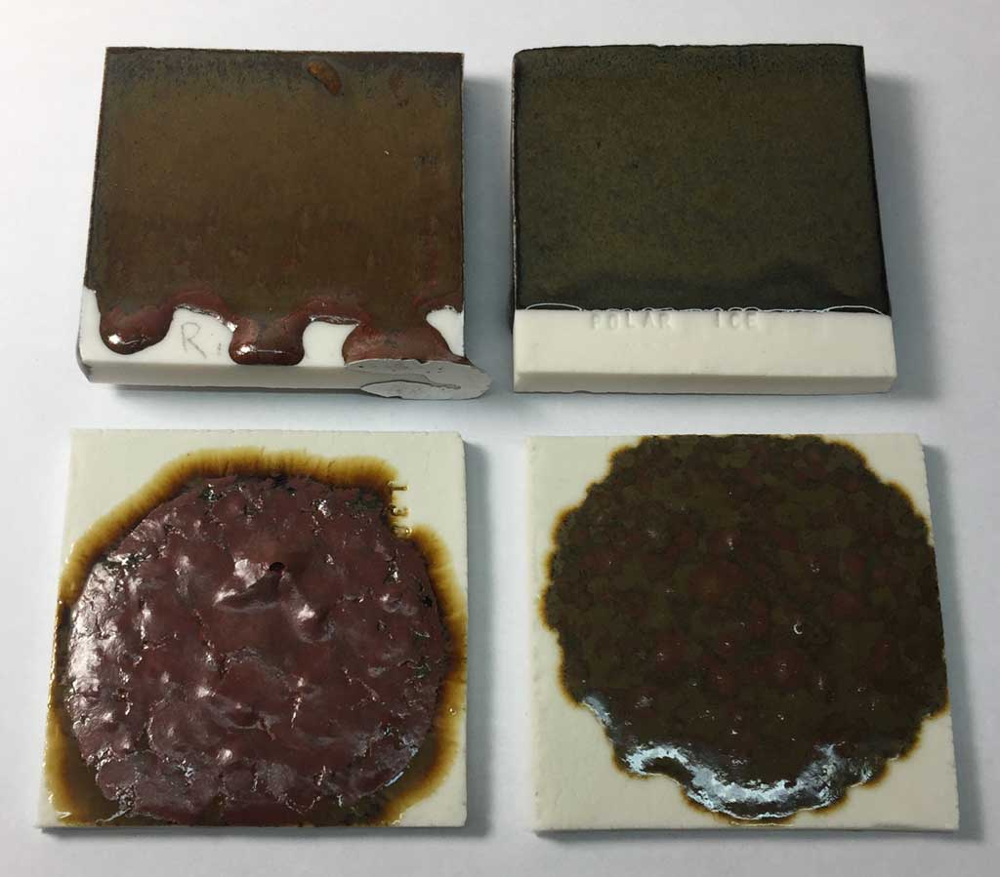
This picture has its own page with more detail, click here to see it.
Fired at cone 6. The samples on the bottom tiles are from ten-gram balls that have melted down (in our GBMF test). These glazes have the same chemistry, but the one of the left sources its B2O3 from Gerstley Borate (which has a high LOI). The one on the right gets it from a frit. Because the fritted version has less gases of decomposition to expel, the glass is much smoother. Curiously, the fritted version is flowing less and the red color has been lost. Why? This could be because the Al2O3, which stabilizes glazes against excessive fluidity, is being dissolved into the melt better and thus is more available for glass building.
Glaze melt fluidity comparison:
Same chemistries, different recipes

This picture has its own page with more detail, click here to see it.
At low temperatures, potters want transparents with good clarity to support brilliant colors. Especially on terra cotta bodies. A melt flow test like this enables a comparison one cannot do on using glazed test tiles.
These are two low temperature glazes I use at cone 03, G2931F and G2931K. They have the same chemistry. But F gets its boron from Ulexite, a material with a high LOI (notice how the escaping gases have disrupted the downward flow). The frit-sourced boron version on the right flows cleanly and contains almost no obvious bubbles.
So obviously, one would use the K, right? Not exactly. I used the K version successfully on many pieces. In a thin layer, the ulexite seems to act as its own fining agent, like Gerstley Borate, and the bubbles do merge clear well enough.
What material makes the tiny bubbles? The big bubbles?

This picture has its own page with more detail, click here to see it.
These are two 10 gram GBMF test balls of Worthington Clear glaze fired at cone 03 on terra cotta tiles (55 Gerstley Borate, 30 kaolin, 20 silica). On the left it contains raw kaolin, on the right calcined kaolin. The clouds of finer bubbles (on the left) are gone from the glaze on the right. That means the kaolin is generating them and the Gerstley Borate the larger bubbles. These are a bane of the terra cotta process. One secret of getting more transparent glazes is to fire to temperature and soak only long enough to even out the temperature, then drop 100F and soak there (I hold it half an hour).
Orange-peel or pebbly glaze surface. Why?
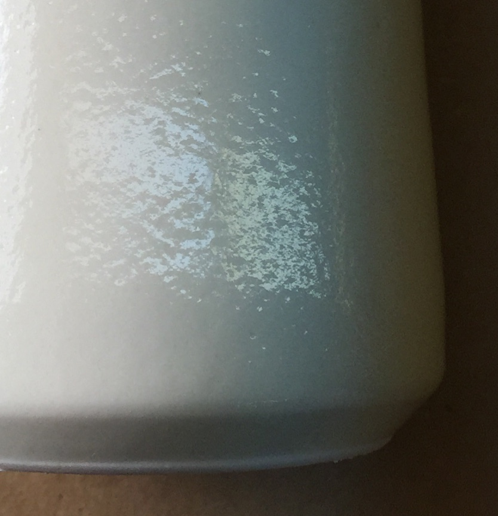
This picture has its own page with more detail, click here to see it.
This is a cone 10 glossy glaze. It has the chemistry that suggests it should be crystal clear and smooth. But there are multiple issues with the materials supplying that chemistry: Strontium carbonate, talc and calcium carbonate. Each has a significant LOI and produces gases decomposition. When the gases need to come out at the wrong time it turns the glaze into a Swiss cheeze of micro-bubbles. A study to isolate which of these three materials is the problem might make it possible to adjust the firing to accommodate it. But probably not. The most obvious solution is to just use non-gassing sources MgO, SrO, CaO and BaO (which will require some calculation). There is a good reason to do this: The glaze contains some boron frit, that is likely kick-starting melting much earlier than a standard raw-material-only cone 10 glaze. That fluid melt may not only be trapping gases from the body but creating a perfect environment to trap all the bubbles coming out of those carbonates and talc. All of this being said, a drop and hold firing schedule could also smooth it out a lot.
Is it any wonder that glazes fire with defects?
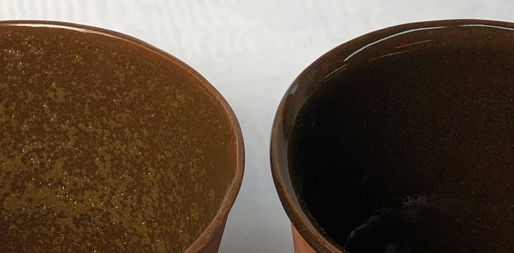
This picture has its own page with more detail, click here to see it.
Both pieces are the same clay, same glaze. The one on the left went to cone 4. Notice how full of holes and bubbles the glaze is. The one on the right went to cone 6 using the C6DHSC firing schedule. It is perfectly smooth and glassy.
Bubble city with Seattle Midnight body and G3806C glaze at cone 01, 4 and 5

This picture has its own page with more detail, click here to see it.
This black body is made by Seattle Pottery Supply. Surfaces like this are obviously not functional, but for decorative ware? Yes! How does this happen? This body contains a material that is adding to its LOI (likely raw or burnt umber). Not just that, but the gases are being expelled at the wrong time. How is that? The glaze is fluid at cone 6 and begins melting way down around cone 04. It is melting long before the gases of decomposition from the body are finished being expelled. So they have to bubble up through the glaze, creating the effect you see here. This body is actually over-mature and brittle at cone 5, but at cone 01 its strength is fairly good.
High LOI materials can turn your glaze into Aero chocolate!
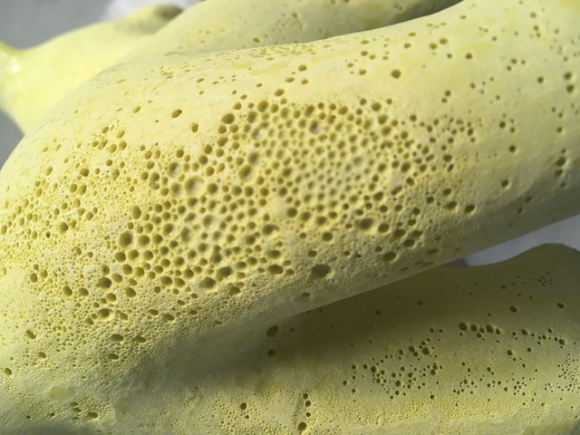
This picture has its own page with more detail, click here to see it.
The smooth surface of this blistering glaze has been ground off to reveal how serious the bubble problem really is. If the body or glaze itself is generating gases of decomposition at the wrong time, and the glaze has too little melt fluidity to pass the bubbles, this can happen. Opacifiers (especially zircon) and stains can reduce melt fluidity dramatically. Even glossy smooth glazes can have bubbles lurking just below the surface, wear and tear on a piece can open them up, creating micro holes that roughen the surface.
Talc was making this glaze "puffy" - here is how I fixed it.
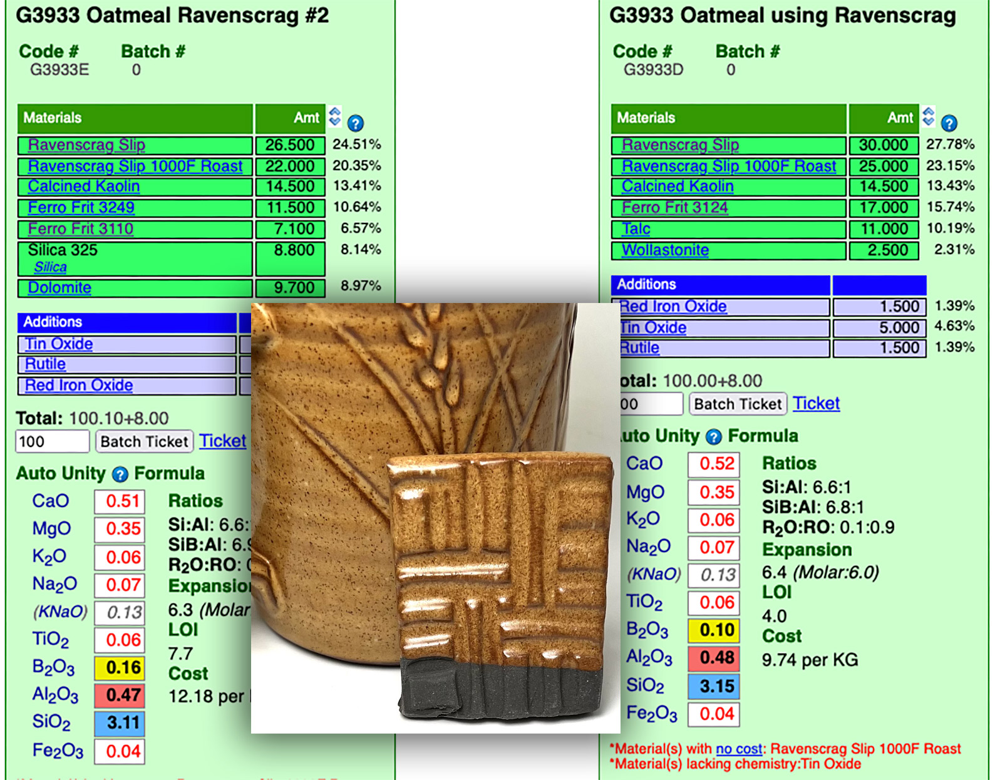
This picture has its own page with more detail, click here to see it.
The recipe on the right employs talc to source the MgO needed to create a silky matte texture. However, talc is a late gasser, potentially able to produce micro-bubbles in the glaze after it has begun melting. The reduction in the definition of contour edges on the tile in front and the reduction in melt fluidity tipped me off. Using my account at insight-live.com I did the calculations needed to source the MgO using dolomite instead, producing recipe G3933E. While dolomite has a far higher LOI than talc it starts releasing the gasses of its decomposition much earlier and finishes well before talc. The mug in the back confirmed my suspicions, firing with a much smoother surface (and with far better definition of the incising).
Imposing an LOI in INSIGHT
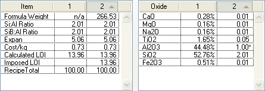
This picture has its own page with more detail, click here to see it.
Desktop Insight can calculate the LOI of a recipe based on the LOIs it knows of the individual materials in the recipe. But sometimes you need to impose an LOI to force a calculated analysis to match an actual measured LOI in the lab.
Desktop INSIGHT MDT dialog showing kaolin LOI
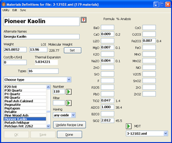
This picture has its own page with more detail, click here to see it.
The LOI appears below the material name and alternative names (beside the weight). The formula that goes with that LOI is the bold numbers in the blanks beside the oxide names on the right.
How much gas escapes firing from cone 03 & 04?
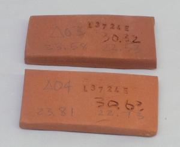
This picture has its own page with more detail, click here to see it.
These were fired to cone 03 (upper) and 04 (lower). At cone 03 the loss in weight is 4.54%, at 04 it is 4.45%. That is 0.08% difference. If a mug weighs 250 grams, that is only 0.21 grams. Does not sound like much. But wait. Air weighs 0.001225g/cc. While this is not the exact weight of the gases escaping during firing it suggests that around 170cc of gases need to bubble up through the glaze if the piece was bisque fired at cone 04 and glaze fired to cone 03.
Magnesium carbonate vs. oxide: One big difference
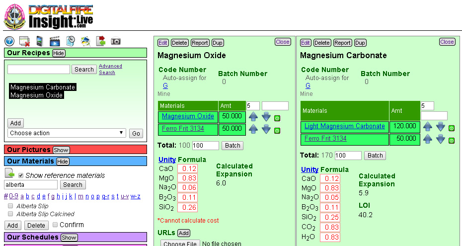
This picture has its own page with more detail, click here to see it.
Here is a screenshot of side-by-side recipes in my account at insight-live.com. It takes 120 mag carb to source the same amount of MgO as 50 mag ox. I just made the two recipes, went into calculation mode and kept bumping up the magcarb by 5 until the chemistry was the same. Note the LOI of the magcarb version is 40. This one would certainly crawl very badly.
Melting range is mainly about boron content
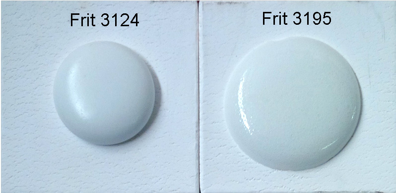
This picture has its own page with more detail, click here to see it.
Fired at 1850. Notice that Frit 3195 is melting earlier. By 1950F, they appear much more similar. Melting earlier can be a disadvantage, it means that gases still escaping as materials in the body and glaze decompose get trapped in the glass matrix. But if the glaze melts later, these have more time to burn away. Glazes that have a lower B2O3 content will melt later, frit 3195 has 23% while Frit 3124 only has 14%).
A body containing manganese bubbles the glaze

This picture has its own page with more detail, click here to see it.
Laguna Barnard Slip substitute fired at cone 03 with a Ferro Frit 3195 clear glaze. The very high bubble content is likely because they are adding manganese dioxide to match the MnO in the chemistry of Barnard (it gases alot during firing).
Does this terra cotta clay have an LOI higher than kaolin? No.
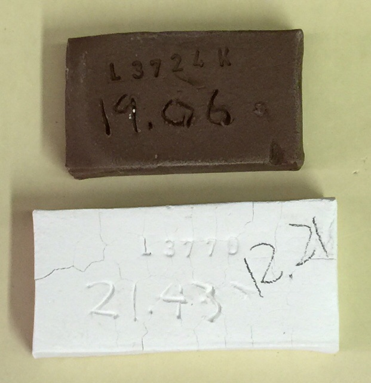
This picture has its own page with more detail, click here to see it.
These two samples demonstrate how different the LOI can be between different clay minerals. The top one is mainly Redart (with a little bentonite and frit), it loses only 4% of its weight when fired to cone 02. The bottom one is New Zealand kaolin, it loses 14% when fired to the same temperature! The top one is vitrified, the bottom one will not vitrify for another 15 cones.
G2931F Ulexite-based transparent bubbles, G2931K frit-based version does not

This picture has its own page with more detail, click here to see it.
I melted these two 9 gram GBMF test balls on tiles to compare their melting (the chemistry of these is identical, the recipes are different). The Ulexite in the G2931F (left) drives the LOI to more than 14%. That means the while the ulexite is decomposing during melting it is creating gases that are creating bubbles in the glass. Notice the size of the F is greater (because it is full of bubbles). While this seems like a serious problem, in practice the F fires crystal-clear on most ware.
Insight-Live comparing a glossy and matte cone 6 base glaze recipe
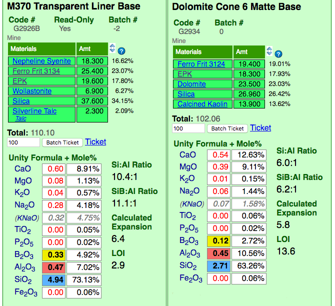
This picture has its own page with more detail, click here to see it.
Insight-live is calculating the unity formula and mole% formula for the two glazes. Notice how different the formula and mole% are for each (the former compares relative numbers of molecules, the latter their weights). The predominant oxides are very different. The calculation is accurate because all materials in the recipe are linked (clickable to view to the right). Notice the Si:Al Ratio: The matte is much lower. Notice the calculated thermal expansion: The matte is much lower because of its high levels of MgO (low expansion) and low levels of KNaO (high expansion). Notice the LOI: The matte is much higher because it contains significant dolomite.
Decomposing manganese granular particles are causing this stoneware to bloat

This picture has its own page with more detail, click here to see it.
This is a cone 6 stoneware with 0.3% 60/80 mesh manganese granular (Plainsman M340). Fired from cone 4 (bottom) to cone 8 (top). This body is normally stable to cone 8, but with the manganese it begins to bloat at cone 7! This is evidence that particles of manganese are generating gases as they decompose and melt at the same time as the body is vitrifying, these produce volumes and pressures sufficiently suddenly that closing channels within the maturing body are unable to vent them out.
Original glaze with Gerstley Borate vs. improved version with frit

This picture has its own page with more detail, click here to see it.
These pieces are fired at the same temperature. The glaze on the left is a popular recipe found online, Worthington Clear (our code number G2931). The Gerstley Borate in it is "farting" as the glaze is melting (the calculated LOI of the glaze as a whole is 15% mainly from that one material). Unless applied very thinly tons of micro-bubbles appear (this example is fired to cone 03). And strange, it is crazing badly also despite the low calculated thermal expansion. Using my account at insight-live.com I was able to source the B2O3 and MgO from a frit (actually two frits) to create the G2931K recipe. Although the thermal expansion calculates higher it is strangely fitting better (albeit not firing as white). As you can see, the new fritted glaze is very glassy and clear (thick or thin).
Inbound Photo Links
 Melting glaze balls at various temperatures to see when all carbon has been expelled |
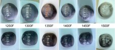 More carbon needs to burn out than you might think! |
Links
| Articles |
Organic Matter in Clays: Detailed Overview
A detailed look at what materials contain organics, what its effects are in firing (e.g. black core), what to do to deal with the problem and how to measure the amount of organics in a clay material. |
| Articles |
Glaze Chemistry Basics - Formula, Analysis, Mole%, Unity
Part of changing your viewpoint of glazes, from a collection of materials to a collection of oxides, is learning what a formula and analysis are, how conversion between the two is done and how unity and LOI impact this. |
| Articles |
How desktop INSIGHT Deals With Unity, LOI and Formula Weight
INSIGHT enables you to enter material analyses as recipes. This is a first step to inserting them into the materials database. Imposing an LOI and understanding how to set unity, and its connection with formula weight are important concepts. |
| Articles |
Firing: What Happens to Ceramic Ware in a Firing Kiln
Understanding more about changes taking place in the ware at each stage of a firing helps tune the curve and atmosphere to produce better ware |
| Glossary |
Formula Weight
|
| Glossary |
Unity Formula
The chemistry of ceramic glazes are normally expressed as formulas. A unity formula has been retotaled to make the numbers of flux oxides total one. |
| Glossary |
Mole%
Mole% is a way of expressing the oxide formula of a fired glaze or glass. It is a preferred over the formula by many technicians who use glaze or glass chemistry. |
| Glossary |
Chemical Analysis
In ceramics, raw material chemistry is expressed a chemical analyses. This is in contrast to fired glaze chemistries which are expressed as oxide formulas. |
| Glossary |
Glaze Bubbles
Suspended micro-bubbles in ceramic glazes affect their transparency and depth. Sometimes they add to to aesthetics. Often not. What causes them and what to do to remove them. |
| Glossary |
Colloid
In ceramics some clays of are of such exceedingly small particle sizes that they can stay in suspension in water indefinitely. But unlike common colloids, clays have a secret weapon. |
| Glossary |
Carbon Burnout
Ceramic materials, especially clays, often contain carbon and organic compounds. When they are fired in a kiln, these must burn out, often producing complications. |
| Glossary |
Formula Ratios
The ratios of individual or group oxide molecule numbers are indicators of things like fired gloss, durability, melting temperature, balance, tendency to craze, etc. |
| Glossary |
Glaze Blisters
Blistering is a common surface defect that occurs with ceramic glazes. The problem emerges from the kiln and can occur erratically in production. And be difficult to solve. |
| Glossary |
Oxidation Firing
In ceramics, this term is most often used to refer to kilns firing with an atmosphere having available oxygen to react with glaze and body surfaces during firing |
| Glossary |
Limit Recipe
"Recipe logic" is the ability to sanity-check ceramic glaze recipes on sight, by noting that materials present and their relative percentages. |
| Glossary |
Differential thermal analysis
|
| Projects |
Stains
|
| Hazards |
Sulfur Dioxide Toxicity
This gas can be produced when clays are fired in a kiln. What can you do? |
| Tests |
LOI/Density/Water Content
LDW LOI, density and water content test procedure for plastic clay bodies and porcelains |
| Oxides | LOI - Loss on Ignition |
 PayPal | No tracking, No ads, No paywall, No transient content! Just organized, concise information constantly updated and improved. Was this helpful? Consider supporting me. |
| By Tony Hansen Follow me on        |  |
Got a Question?
Buy me a coffee and we can talk 

https://digitalfire.com, All Rights Reserved
Privacy Policy